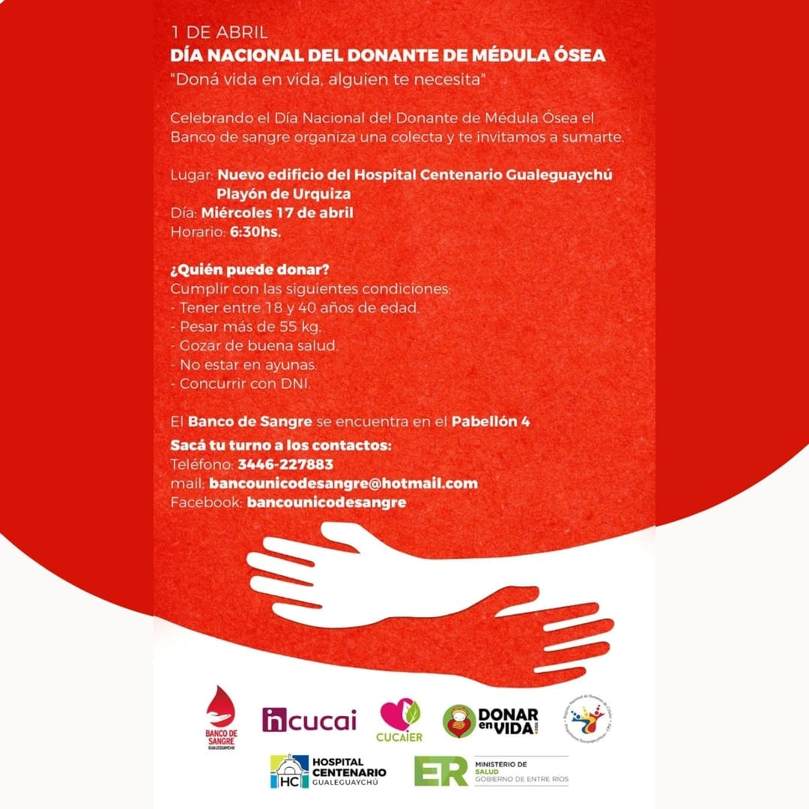

Conoce sobre nuestras actividades

DONACION DE SANGRE Y MEDULA OSEA
Promovemos la donación voluntaria, altruista y fidelizada de sangre y la inscripción en el registro de CPH. Comunicate con nosotros, contestamos todas tus dudas y te damos un turno para que puedas donar sangre e inscribirte como donante de medula osea
Saber más
AHIJADOS
Apadrinamos pacientes que padecen leucemia, aplasia medular o linfoma. Los ayudamos tratando de allanarles el camino durante el transito de la enfermedad.
¿Queres conocer un poquito mas sobre nuestros ahijados?
Saber más
CAMPAÑAS DE DIFUSION
Realizamos campañas de difusión y brindamos charlas informativas en escuelas, empresas e instituciones.
¿Queres que vayamos a tu escuela, instituto, lugar de trabajo, etc. a charlar un poquito sobre este tema tan importante?
Saber másEnterate de las novedades
-

-

-

- 